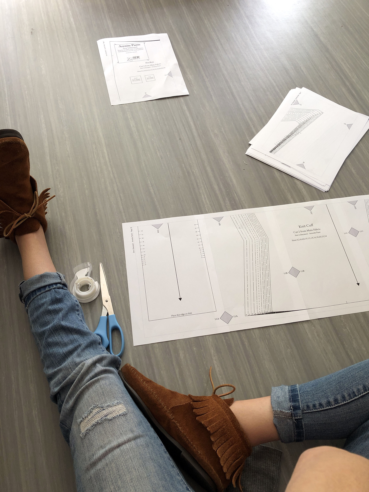
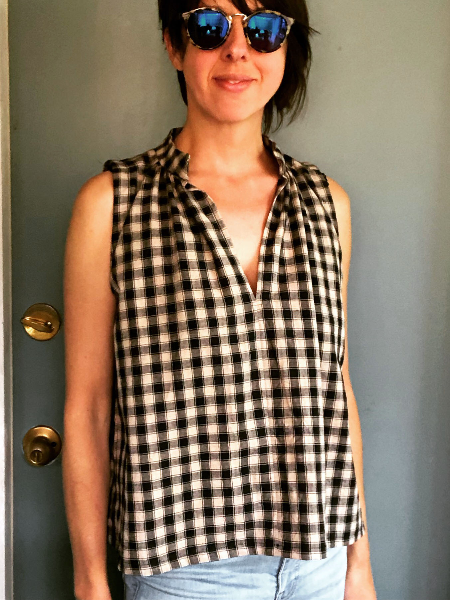

September 13, 2019
Piecing together a PDF pattern.
 A few years ago a friend of mine asked me if I knew how to sew. She was thinking of taking a class and wanted to know if I was interested. I had learned to sew from my lovely mom and had taught myself the rest along the way. I had worked up my skills to the point where I created RTW pieces for a local consignment shop for a few years. I was taking a break from sewing at the time my friend approached me and wished her luck.
While catching up with her a few years later I asked how the sewing was going. She had immersed herself in a world of sewing and online sewists I had no idea existed. Looking up all her lovely creations that she blogged about, I discovered so many independent pattern makers and sewist I was inspired to start sewing again but this time, for myself.
I downloaded my first PDF pattern, Wiksten Haori and got to work. Except I wasn't sewing for myself (old habits die hard), I was making a jacket for my sister. After that project came together so effortlessly and beautifully, I started sewing for myself with the Sew Liberated Matcha Top.
It all starts with a PDF file you can print at home. They are usually around 40 pages long and the fun part is piecing it all together so you can trace your pattern pieces from it. Once you have your pattern pieces you can assemble your garment just like you would with a store-bought pattern.